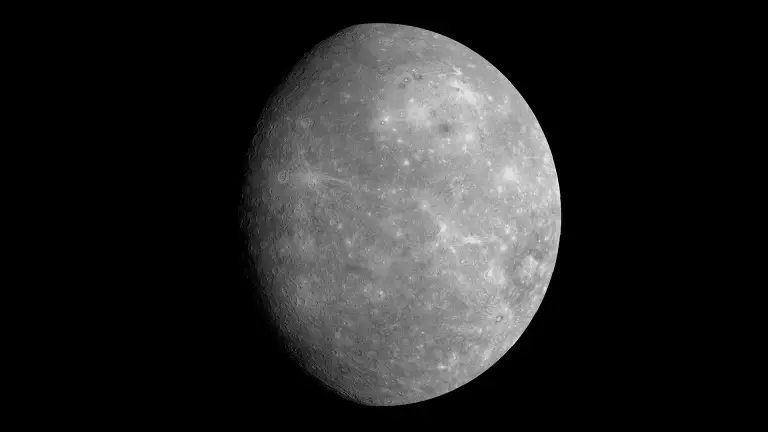
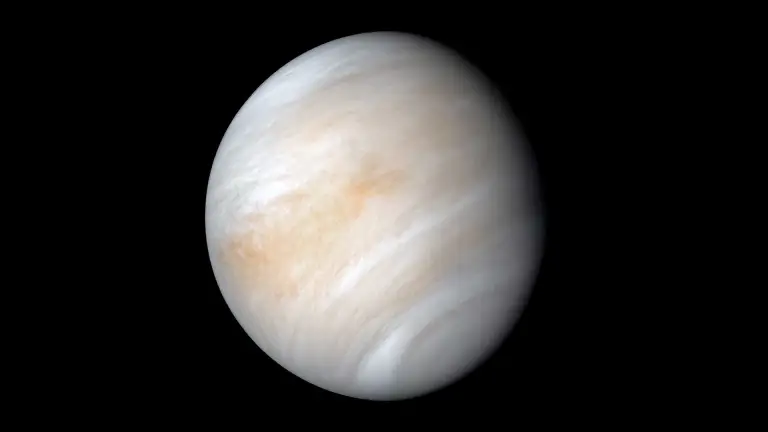
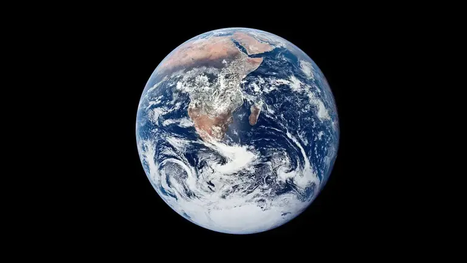
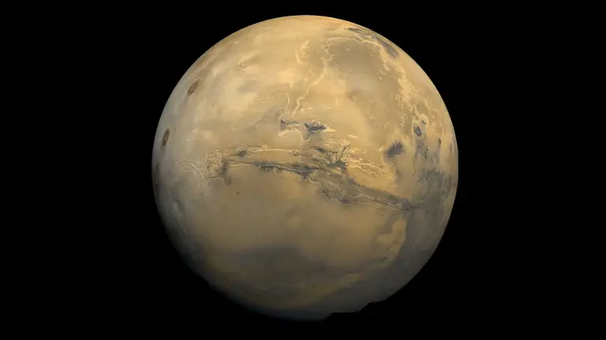

| Mercury | Venus | Earth | Mars | |
|---|---|---|---|---|
| Images of inner planets |  |  |  |  |
| Order from the Sun | 1st | 2nd | 3rd | 4th |
| Mean distance from Sun (AU) | 0.39 AU | 0.72 AU | 1.00 AU | 1.52 AU |
| Equatorial diameter (km) | 4,880 | 12,104 | 12,742 | 6,779 |
| Length of day | 58.6 Earth days | 243 Earth days (retrograde) | 24 hours | 24.6 hours |
| Orbital period (year length) | 88 Earth days | 224.7 Earth days | 365.25 days | 687 Earth days |
| Surface gravity (m/s²) | 3.7 | 8.87 | 9.81 | 3.71 |
| Number of moons | 0 | 0 | 1 | 2 (Phobos, Deimos) |